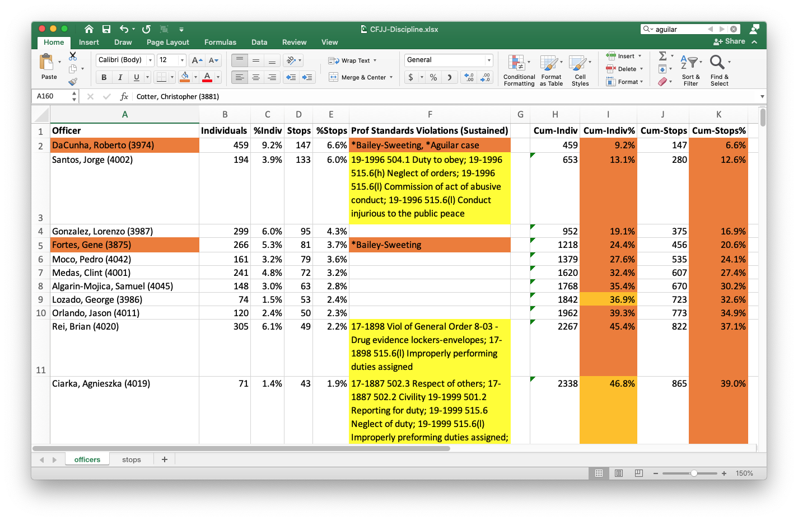

2021-05-11 08:00
When Citizens for Juvenile Justice published their study of racially-biased police stops in New Bedford, We are the Prey, the usual Only Blue Lives Matter voices savaged the report, completely rejecting the possibility that racist policies and personnel may be operating within the New Bedford Police Department.
But no one should have been shocked by the results. Most American cities have long suffered from racist policing, as hundreds of studies over the years have amply documented and other cities have even acknowledged.
CFJJ’s report — informed by data the NBPD itself supplied — shows precisely how, when, where, by whom, and why racial profiling is done. Its findings faulted vague disciplinary policies, poor data collection, arbitrary assignment of youth to an opaque gang database, over-policing in certain neighborhoods, clear over-policing of Black and Hispanic youth, and a relatively small number of officers doing most of the racial profiling. In fact, CFJJ identified the NBPD’s “Top Ten” on page 16 of their report.
This small number of officers whom CFJJ found responsible for the many racially-motivated stops was cited in an Amicus Brief on a racial profiling case now before the Massachusetts Supreme Judicial Court. The case concerns the New Bedford Police gang unit’s pretextual stop of a vehicle with a backseat passenger well-known to the unit.
The gang unit officers who searched and arrested passenger Zahkuan J. Bailey-Sweeting after the driver supposedly made an unsafe lane change included at least three officers responsible for the most stops in the CFJJ data. These three officers — Roberto DaCunha, Gene Fortes, and Kory Kubik — alone accounted for one of seven stops in the CFJJ data. Bogus, and very likely unconstitutional, traffic violations no doubt help inflate these officers’ numbers.
I was curious to see if any of these officers appeared in a “Professional Standards” document the NBPD released to the public last year. The NBPD spreadsheet shows a backlog of police complaints over many years with a status (filed, sustained, not, exonerated). The cases go back as far as 2012.

So I cross-referenced the NBPD complaints and disciplinary issues on all officers mentioned in the CFJJ report, using the number preferred by the NBPD — number of stops — rather than CFJJ’s number of individuals affected by those stops. The result was a spreadsheet shown in the image above (available for download).
Even if one stop targeted five individuals, I only looked at discrete officer stops. The results were only slightly different from CFJJ’s, but even when using NBPD’s preferred metric the results still showed a high degree of racial profiling, an apparent lack of officer discipline, and they suggest a culture of police impunity.
CFJJ’s analysis by race depended on counting individuals affected by the police. But mine was focused on the police officers making those stops. Five officers accounted for almost 25% of all stops, eleven accounted for 40%, and eighteen officers accounted for 50%. There was nothing in those results to contradict CFJJ’s conclusions — even using NBPD’s preferred metric.
One officer — Roberto DaCunha — alone accounted for 6.6% all individual stops. That’s one out of fifteen of all stops supplied to CFJJ by the NBPD. And DaCunha did it without incurring even a single disciplinary write-up — ever. In addition to his involvement in the Bailey-Sweeting stop, DaCunha is the same officer named in a lawsuit for the wrongful death of Erik Aguilar, which cost the City of New Bedford almost a million dollars to settle. In the investigation that followed, DaCunha invoked the Fifth Amendment and investigators appeared to be satisfied with that. The Aguilar family’s lawsuit maintained that DaCunha and four others “knew that leaving Mr. Aguilar in this position could cause him to die from asphyxia, yet they did not move him from this position until after his heart had stopped beating.”
I do not have list of officers in the gang unit. However, none of the officers in the gang unit whose names I recognize from past news reports or from Malcolm Gracia’s murder appear to have racked up any consequential disciplinary complaints. And many of the officers with the highest numbers of stops either received no disciplinary write-ups — or received write-ups for only relatively minor issues: mishandling evidence or failing to report for duty. This seems to suggest that their racial profiling is either condoned or incentivized.
Some of the more troubling disciplinary issues among New Bedford’s Finest include: Civility; Respect of Others; Violation of General Order 3-20 Anti-Discrimination policy; Violation of General Order 12-02 Use of Force; Knowledge of laws; Commission of an act of abusive conduct; Immoral Conduct Conduct unbecoming; Conduct injurious to the public; Neglect of Duty; Insubordination; Suspicious Conduct; [Not] Speaking the truth; Issuing False Statements; Consorting with Criminals; Use of intoxicants; Physical and mental fitness; Return of Property to Owner; Absent without Leave; and Ignorance of Departmental Rules and Regs.
Year after year officers keep violating the same policies over and over, yet they remain on the force. Chris Cotter, for example, who also serves on the New Bedford School Committee, has violated computer and social media policies repeatedly since 2014, as his sustained disciplinary cases attest.
14-1752 502.2 Respect of others; 14-1752 502.3 Civility; 14-1752 Viol of General Order 2-13 - Computer Usage Policy; 15-1796 Viol of General Order 13-06 - Use of Dept. Vehicle; 15-1796 Viol of General Order 2-13 - Computer Usage Policy; 16-1822 Viol of General Order 2-13 - Computer Usage Policy; 16-1822 Viol of General Order 3-24 - Social Media Policy; 17-1856 Viol of General Order 3-24 - Social Media Policy; 17-1856 Viol of General Order 7-02 Release of info to media; 17-1857 515.6(c) Insubordination - Disrespect for ranking officer; 18-1951 502.2 Civility; 18-1951 501.6 Providing police service on duty; 18-1951 501.9 Answering questions; 18-1951 515.6(l) Improperly performing duties assigned; 19-2009 515.6(c) Insubordination; 19-2009 502.2 Civility; 19-2009 502.3 Respect of Others
Paul Hodson, accused of killing Erik Aguilar in 2010, had no disciplinary issues until 2019 when he was written up for: [19-1992] 515.6(o) Commission of any act contrary to the order and discipline of the dept; and 501.1 Suspicious conduct. Despite repeatedly and publicly disparaging minorities on social media, Hodson happily enjoyed departmental impunity — until he was finally sent away on federal child pornography charges in 2019.
Damien Vasconcelos, who was also named in the Aguilar lawsuit for failure to render aid and apparently gave Hodson a congratulatory fist bump at the scene, had several, mostly low-level, disciplinary issues sustained.
When you read through the Professional Standards cases, it is striking that in any other job authoritarians, racists, drunks, liars, rude employees, no-shows, and insubordinates would be quickly sent packing.
Unfortunately, the data shows that New Bedford police are doing a far better job of serving themselves and covering their own backs than protecting and serving the people of New Bedford.